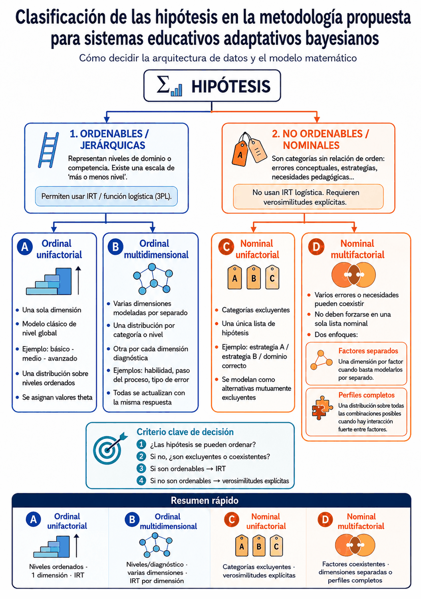

Guía técnica para implementar evaluación adaptativa con inferencia bayesiana y entropía de Shannon
Versión 1.7
Ver también: Explicación matemática detallada con ejemplos numéricos →
Descargar especificación operativa para IA — archivo breve listo para adjuntar o pegar en cualquier modelo de IA
Este documento sirve como guía para crear aplicaciones, actividades o cuestionarios educativos adaptativos basados en inferencia bayesiana y entropía de Shannon.
El objetivo no es crear un test lineal ni una secuencia rígida de preguntas, sino un sistema capaz de adaptar la experiencia del alumno a partir de sus respuestas. Cada respuesta se interpreta como una evidencia que modifica progresivamente una distribución de probabilidades sobre distintas hipótesis educativas.
Estas hipótesis pueden referirse a:
El sistema debe producir una interpretación pedagógica, no solo una puntuación.
El programa debe usar las respuestas del alumno como evidencias para actualizar hipótesis sobre su situación de aprendizaje.
Cada respuesta debe modificar la estimación del sistema de forma gradual. Una sola respuesta no debe determinar por completo el resultado.
Una respuesta correcta debe aumentar la plausibilidad de ciertas hipótesis y una respuesta incorrecta debe aumentar la plausibilidad de otras, siempre según las verosimilitudes asociadas a cada pregunta.
El sistema debe evitar conclusiones tajantes cuando la incertidumbre siga siendo alta.
El estado del alumno debe representarse como una distribución de probabilidades sobre varias hipótesis.
Por ejemplo, en un sistema sencillo podrían usarse tres hipótesis:
Pero el sistema no debe asumir obligatoriamente tres niveles. Debe poder adaptarse a más o menos niveles, según el contexto educativo.
También pueden usarse hipótesis no estrictamente jerárquicas, por ejemplo:
Al inicio, si no hay información previa del alumno, el sistema puede partir de probabilidades equilibradas. Si hay información previa fiable, puede usar una distribución inicial justificada.
El estado del alumno no tiene por qué ser una sola distribución. Cuando interesa saber no solo cuánto domina, sino qué habilidades o pasos concretos falla, el sistema puede mantener varias distribuciones de probabilidad en paralelo: una por categoría o nivel y otra por cada dimensión diagnóstica (una habilidad, un paso del proceso, un tipo de error).
Todas se actualizan con la misma respuesta del alumno: el resultado global modifica la creencia sobre el nivel, y cada parte de la respuesta modifica la creencia sobre la dimensión correspondiente. Así, la estimación de nivel indica qué conviene practicar, y el diagnóstico por dimensión indica qué conviene explicar o reforzar. Cada dimensión puede tener su propia probabilidad de acierto por azar, por lo que sus porcentajes no son directamente comparables entre sí; la referencia común es el valor de nivel subyacente.

El sistema debe actualizar la distribución de probabilidades mediante inferencia bayesiana.
Para cada hipótesis, debe estimarse la probabilidad de observar la respuesta del alumno si esa hipótesis fuera cierta.
Esa probabilidad es la verosimilitud.
Si el alumno acierta una pregunta, el sistema debe usar la probabilidad de acierto bajo cada hipótesis. Si el alumno falla, debe usar la probabilidad de fallo bajo cada hipótesis.
El resultado de cada actualización debe ser una nueva distribución de probabilidades sobre las hipótesis consideradas.
El proceso debe repetirse tras cada respuesta.
Aunque el documento debe seguir siendo comprensible para docentes, conviene incluir las fórmulas esenciales para que la IA implemente el sistema de forma coherente.
Si hay \(n\) hipótesis y no existe información previa fiable, puede usarse una distribución uniforme:
Donde \(H_i\) representa una hipótesis posible sobre el estado del alumno.
Después de cada respuesta, la probabilidad de cada hipótesis se actualiza mediante:
El denominador se calcula sumando sobre todas las hipótesis:
Donde \(R\) es la respuesta observada, que puede ser acierto, fallo u otro resultado autocorregible previsto por el sistema.
Para cada pregunta \(q\) y cada hipótesis \(H_i\), el sistema debe estimar:
Si el alumno falla, debe usarse:
Estas probabilidades son las verosimilitudes que alimentan la actualización bayesiana.
En preguntas de opción múltiple, la probabilidad mínima de acierto por azar depende del número de opciones de cada pregunta:
Donde \(c_q\) es la probabilidad de acierto por azar de la pregunta \(q\), y \(m_q\) es el número de opciones de esa pregunta.
Por ejemplo, una pregunta de cuatro opciones tiene:
Esta probabilidad debe pertenecer a cada pregunta, no al test completo.
El sistema debe poder generar las verosimilitudes automáticamente. Una opción recomendable es usar una función logística ajustada por azar:
Donde:
Esta fórmula no sustituye a Bayes. Solo genera las verosimilitudes que Bayes necesita.
El parámetro \(a\) controla la pendiente de la curva logística. Un valor alto hace que la función discrimine más entre hipótesis próximas; un valor bajo produce transiciones más suaves. Los valores habituales en psicometría oscilan entre 0.5 y 2.5. Para sistemas educativos de propósito general, un valor de 1.0 a 1.5 es un punto de partida razonable; 1.5 es una buena elección por defecto.
La incertidumbre del sistema se mide mediante:
Donde \(p_i\) es la probabilidad actual de cada hipótesis.
La entropía máxima, cuando todas las hipótesis son igual de probables, es:
Este valor ayuda a ajustar el umbral de parada al número de hipótesis consideradas.
Para seleccionar la siguiente pregunta, el sistema puede estimar la reducción esperada de incertidumbre:
Donde \(P(A)\) es la probabilidad total esperada de acierto y \(P(F)\) la probabilidad total esperada de fallo, calculadas mediante la ley de la probabilidad total:
Las distribuciones posteriores al acierto y al fallo se calculan aplicando Bayes antes de obtener la respuesta real:
Cuando sea posible, la pregunta más útil será la que produzca mayor reducción esperada de entropía.
Las fórmulas anteriores suponen que la respuesta es binaria: acierto o fallo. Pero muchas tareas se resuelven por pasos o componentes y admiten aciertos parciales. En esos casos, en lugar de clasificar la respuesta como acierto o fallo, se resume en una puntuación \(s\) entre 0 y 1, y la verosimilitud se obtiene interpolando entre la de acierto y la de fallo:
Si \(s=1\), equivale a un acierto pleno; si \(s=0\), a un fallo pleno; si \(s=0{,}5\), la verosimilitud es plana y no modifica la distribución. Esta verosimilitud suave entra en la actualización bayesiana igual que cualquier otra: solo cambia la forma de construirla. La puntuación \(s\) debe calcularse de forma explícita y autocorregible, normalmente como suma ponderada de subcriterios cuyos pesos suman 1. El desarrollo formal y un ejemplo numérico están en la explicación matemática.
Las verosimilitudes son el elemento central del sistema.
Para cada pregunta, el sistema debe estimar:
El docente no debe tener que rellenar manualmente una tabla de probabilidades. Esa tarea debe hacerla el sistema.
El docente solo debería aportar información pedagógica comprensible, como:
A partir de esa información, el programa debe generar automáticamente las verosimilitudes. Para ello puede usar un modelo generador, preferiblemente una función logística ajustada por azar, y más adelante puede recalibrar los valores con datos reales si dispone de suficientes respuestas.
Por tanto, el flujo recomendado es:
El criterio docente debe intervenir en la definición de niveles, dificultades, objetivos y conceptos, pero no debe exigir introducir probabilidades numéricas.
La aplicación no debe depender de una tabla fija global de verosimilitudes.
Cada pregunta debe poder tener sus propios parámetros, especialmente:
Esto permite que el sistema funcione con preguntas de distinto tipo dentro de una misma prueba.
Por ejemplo, una prueba puede incluir preguntas de dos opciones, cuatro opciones, cinco opciones, emparejamiento y respuesta numérica. Cada una debe generar sus propias verosimilitudes.
Cada pregunta debe tener una dificultad estimada.
La dificultad puede expresarse de forma cualitativa, por ejemplo: fácil, media, difícil. También puede expresarse mediante una escala más flexible.
El sistema no debe asumir que siempre habrá tres dificultades. Debe adaptarse al número de categorías que defina el docente.
Cuando el docente define la dificultad de forma cualitativa, el sistema debe convertirla a valores numéricos para operar con la función logística. Una convención útil es centrar los valores en cero y separarlos por intervalos iguales:
| Categorías de dificultad | Valores numéricos \(b_q\) |
|---|---|
| 2 | −0,5 · · 0,5 |
| 3 | −1 · · 0 · · 1 |
| 4 | −1,5 · · −0,5 · · 0,5 · · 1,5 |
| 5 | −2 · · −1 · · 0 · · 1 · · 2 |
Los valores numéricos \(\theta_i\) de los niveles o hipótesis jerárquicas siguen la misma convención de centrado en cero con intervalos iguales, pero deben abarcar un rango estrictamente mayor que el de \(b_q\). Esta condición es importante: si \(\theta_{\max} = b_{\max}\), el nivel extremo y la dificultad extrema coinciden en el punto de inflexión de la curva logística. En ese punto la pregunta discrimina mucho, pero la probabilidad de acierto del nivel extremo todavía puede ser moderada, por lo que acertarla confirma débilmente ese nivel. Un factor de 2 funciona bien en la práctica: \(|\theta_{\max}| = 2 \cdot |b_{\max}|\). Por ejemplo, con 3 dificultades \(b \in \{-1, 0, +1\}\) y 3 niveles, usar \(\theta \in \{-2, 0, +2\}\) hace que las preguntas difíciles resulten más informativas para los alumnos avanzados. Lo más robusto es calcular \(\theta_{\max}\) automáticamente: \(\theta_{\max} = 2 \cdot \max|b_q|\).
El sistema debe admitir distintos números de hipótesis:
El umbral de entropía y los criterios de parada deben adaptarse al número de hipótesis consideradas. No debe usarse el mismo umbral para todos los diseños sin justificación.
Si se desea parar cuando la hipótesis más probable supera un nivel de confianza \(p_{\min}\) (por ejemplo, 0,80), un umbral de entropía orientativo asociado a ese nivel de confianza es:
Esta fórmula supone que la probabilidad restante se reparte uniformemente entre las otras \(n-1\) hipótesis. Algunos valores orientativos con \(p_{\min}=0{,}80\):
| Hipótesis \(n\) | \(H_{\text{stop}}\) (bits) |
|---|---|
| 2 | 0,72 |
| 3 | 0,92 |
| 4 | 1,04 |
| 5 | 1,12 |
La fórmula anterior supone que la probabilidad restante se reparte uniformemente entre las otras \(n-1\) hipótesis, lo que no siempre ocurre en distribuciones reales. Por ejemplo, con tres hipótesis, las distribuciones (0,80, 0,10, 0,10) y (0,80, 0,19, 0,01) tienen la misma hipótesis máxima pero distinta entropía. Por tanto, el umbral \(H_{\text{stop}}\) debe entenderse como una aproximación práctica, no como un equivalente exacto. Conviene saber que, cuando \(H_{\text{stop}}\) se deriva del mismo \(p_{\min}\), la condición de probabilidad máxima ya implica la de entropía (si la hipótesis más probable alcanza \(p_{\min}\), la entropía queda por debajo del umbral): comprobar las dos es inofensivo, pero no añade exigencia. Un control adicional que sí la añade es exigir una separación mínima entre la hipótesis ganadora y la segunda (véase la explicación matemática, §7.4).
Las hipótesis de una misma distribución deben ser mutuamente excluyentes y cubrir las alternativas relevantes para esa decisión. Si varios errores, lagunas o necesidades pueden coexistir, conviene usar distribuciones separadas por concepto, dimensión o categoría, en lugar de forzarlas dentro de una única lista de hipótesis.
Cuando las hipótesis no son jerárquicas —categorías alternativas sin relación de orden entre ellas, como distintas estrategias, causas alternativas de un mismo fallo o áreas temáticas sin jerarquía—, la función logística IRT puede no ser el modelo más adecuado, porque asume que existe una escala única de «más o menos nivel». En esos casos conviene definir las verosimilitudes de otra forma: por ejemplo, asignando directamente una probabilidad de acierto alta para las preguntas que diagnostican la hipótesis correcta y una probabilidad más baja para las que la confunden con otras hipótesis. La actualización bayesiana sigue siendo idéntica; solo cambia la forma de generar las verosimilitudes.
Si, en cambio, varios errores o necesidades pueden coexistir, no conviene meterlos en una sola lista de hipótesis nominales. Lo adecuado es usar una dimensión por factor o, si interesa captar sus interacciones, una distribución sobre perfiles completos (las combinaciones posibles de esos factores). En ese marco, la evidencia ideal no es solo «acierto» o «fallo», sino también qué opción ha elegido el alumno: un distractor puede ser precisamente la señal de un error concreto.
Para asignar esas probabilidades sin datos empíricos conviene un criterio explícito. Por cada pregunta y cada hipótesis, factor o perfil, estima: «si el alumno tuviera este error o esta combinación de errores, ¿con qué frecuencia acertaría esta pregunta y qué distractor elegiría?». El valor será bajo cuando la pregunta ataca justo el concepto que el error distorsiona, y alto cuando el error no interfiere. Acota cada valor entre un suelo de azar (no menos de \(1/m\), con \(m\) opciones, cuando el fallo procede de responder al azar) y un techo inferior a 1 para el dominio (en torno a 0,90–0,95, dejando margen a descuidos). Hay una única excepción justificada al suelo: si la pregunta es de opción múltiple y uno de los distractores es precisamente la respuesta que produce el error, el alumno es atraído hacia esa opción y su probabilidad de acierto cae por debajo del azar. No hace falta afinar el decimal exacto: basta con que, en las preguntas que discriminan, los perfiles correctos se separen claramente de los que el error hace fallar. La formulación matemática (§10) detalla estas variantes y su validación.
Si el sistema debe funcionar de forma automática, debe usar preguntas autocorregibles.
Son adecuados, entre otros, estos formatos:
No deben incluirse preguntas abiertas largas si el programa no puede corregirlas automáticamente de forma fiable.
Las preguntas abiertas pueden ser útiles en una actividad educativa general, pero no deben formar parte del motor adaptativo automático si no existe un mecanismo fiable de corrección o intervención docente.
En preguntas de opción múltiple, la probabilidad mínima de acierto por azar debe depender del número de opciones de cada pregunta. Esta probabilidad pertenece a cada ítem, no al test completo.
Ejemplos:
Si dentro de una misma prueba hay preguntas con distinto número de opciones, cada pregunta debe usar su propia probabilidad mínima de acierto por azar.
En selección múltiple con varias respuestas correctas, la probabilidad de acierto por azar puede ser distinta. El sistema debe tratar este caso de forma específica, especialmente si se exige coincidencia exacta con la combinación correcta.
En respuestas numéricas con tolerancia o respuestas breves exactas, la probabilidad de acierto por azar puede considerarse nula o muy baja, según el diseño.
Cuando un ítem se corrige por varios componentes con distinto número de opciones —por ejemplo, una tarea con varios pasos—, su probabilidad de acierto por azar no es la de una sola pregunta. En ese caso se calcula como la media ponderada de los azares de cada componente, usando los mismos pesos con que se puntúa la respuesta. Ese valor agregado es el que alimenta la función logística del ítem completo.
Cuando proceda, las verosimilitudes pueden generarse mediante una función logística ajustada por azar.
La idea general es que la probabilidad de acierto debe aumentar cuando el nivel hipotético del alumno supera la dificultad de la pregunta, y debe disminuir cuando la dificultad supera el nivel hipotético del alumno.
Si se usa este modelo, debe respetarse una condición importante: la probabilidad de acierto no debe ser inferior a la probabilidad de acierto por azar propia de la pregunta.
Por tanto, una pregunta de cuatro opciones no debería asignar una probabilidad de acierto inferior al 25 %, porque un alumno que responde al azar tiene esa probabilidad de acertar.
La función logística no sustituye a Bayes. Solo sirve para generar las verosimilitudes que Bayes necesita.
El sistema debe permitir que esta generación sea ajustable. Por ejemplo, puede existir un parámetro de sensibilidad o discriminación que determine cuánto separa una pregunta entre unas hipótesis y otras.
A partir de la estimación actual, el programa debe seleccionar dinámicamente la siguiente pregunta, explicación o actividad.
La selección debe buscar utilidad pedagógica y puede servir para:
El sistema no debe limitarse a subir la dificultad tras un acierto y bajarla tras un fallo.
Debe tener en cuenta: historial de respuestas, conceptos ya evaluados, errores detectados, variedad de contenidos, dificultad relativa de las preguntas, tipo de pregunta, número de opciones de cada pregunta, probabilidad de acierto por azar, y grado de seguridad de la estimación actual.
Cuando varias preguntas tienen la misma ganancia de información esperada —lo que ocurre frecuentemente cuando comparten los mismos parámetros de dificultad y número de opciones—, la selección entre ellas no debe ser determinista. Se recomienda una selección aleatoria ponderada: calcular la ganancia de todas las candidatas, reunir las que están dentro de un margen mínimo del máximo, y elegir entre ellas con una probabilidad proporcional al inverso de las veces que su categoría o concepto ha aparecido ya. Esto combina máxima utilidad informativa con diversidad temática, sin imponer restricciones rígidas. Una selección determinista entre empates produce test sistemáticamente repetitivos entre distintas sesiones.
En recursos de práctica adaptativa, refuerzo o entrenamiento por tipos, la selección no debe perseguir siempre el mismo objetivo. Al principio conviene diagnosticar; después conviene intervenir sobre lo menos dominado.
Se recomienda una estrategia en dos fases:
Esta separación evita un uso excesivo de la entropía de Shannon. La entropía responde a la pregunta “¿dónde tengo más incertidumbre?”, pero no siempre responde a “¿qué necesita practicar más el alumno?”. En evaluación diagnóstica pura, maximizar la reducción de incertidumbre puede ser el criterio principal. En práctica adaptativa y refuerzo, debe combinarse con una función de utilidad pedagógica que dé prioridad a los contenidos menos dominados.
En términos operativos, la fase de refuerzo puede usar una puntuación de utilidad como:
utilidad = α · IG_normalizada + (1 − α) · ajuste_de_dificultad
donde ajuste_de_dificultad disminuye cuando la dificultad de la pregunta se aleja mucho del nivel estimado del alumno. Un valor inicial razonable es α = 0.6 o 0.7, para conservar valor diagnóstico sin convertir el refuerzo en una sucesión de ejercicios demasiado difíciles.
Los criterios de parada (sección 17) suponen que el objetivo es diagnosticar y cerrar. En recursos de práctica o refuerzo abierto, en cambio, puede no haber final: la sesión continúa mientras el alumno practica, y el estado estimado se entiende como una estimación viva, no como un diagnóstico cerrado. En ese modo, la entropía y la confianza sirven para informar del grado de seguridad, no para terminar la sesión, y la selección en dos fases se mantiene durante toda la práctica.
Con pocos intentos, una sola respuesta puede desplazar mucho la estimación. Para no comunicar un dominio infundado, conviene exigir una muestra mínima por categoría o dimensión antes de mostrar niveles altos de dominio, y presentar la estimación como provisional mientras la evidencia sea escasa. Es una decisión de presentación: no cambia el cálculo bayesiano, solo cómo se traduce a la interfaz.
En sesiones de práctica largas hay un matiz más: el alumno aprende mientras practica, y la actualización bayesiana pura da el mismo peso a las respuestas antiguas que a las recientes, de modo que la estimación puede quedarse anclada en un estado que el alumno ya ha superado. Para que la estimación siga su estado actual conviene aplicar un olvido gradual de la evidencia antigua (olvido exponencial): las respuestas recientes pesan más que las antiguas y el sistema recuerda, en la práctica, las últimas 10–20 respuestas. En recursos diagnósticos de sesión corta no debe aplicarse este olvido. El mecanismo, sus valores recomendados y la extensión que modela explícitamente el aprendizaje están en la explicación matemática (§3.5).
Cuando sea posible, el sistema debe seleccionar la pregunta que más reduzca la incertidumbre esperada.
Para ello debe estimar, antes de presentar la pregunta:
La mejor pregunta no tiene por qué ser la que coincide con el nivel más probable. Puede ser una pregunta que ayude a distinguir entre dos hipótesis todavía plausibles.
Por ejemplo, si el sistema duda entre nivel medio y avanzado, una pregunta difícil puede ser más útil que una pregunta media. Si duda entre básico y medio, una pregunta media o fácil puede ser más informativa, según las verosimilitudes.
Maximizar la reducción de incertidumbre tiene un efecto secundario que conviene conocer: las preguntas más informativas tienden a ser aquellas cuya probabilidad de acierto ronda el 50 %, de modo que el alumno fallará aproximadamente la mitad de lo que responda durante el diagnóstico. Es lo óptimo desde el punto de vista informativo, pero puede tener coste motivacional con alumnado joven o con dificultades. Una decisión pedagógica razonable —y opcional— es abrir con una pregunta asequible o intercalar alguna de éxito probable, aceptando una pequeña pérdida de eficiencia a cambio de sostener la confianza del alumno.
Cuando la selección de preguntas se realiza por máxima ganancia de información esperada, la recuperación queda en gran parte integrada en el propio mecanismo bayesiano: si el alumno inicialmente falla pero después responde correctamente preguntas más difíciles, el posterior se desplaza automáticamente y el sistema selecciona preguntas más exigentes. No suele ser necesaria una lógica de recuperación explícita, pero la recuperación completa no está garantizada si las preguntas están mal calibradas, si hay pocas disponibles en algún nivel, o si el alumno responde al azar.
Los mecanismos de recuperación explícitos solo son necesarios cuando la selección de preguntas se basa en reglas simples de dificultad (subir tras acierto, bajar tras fallo), porque en ese caso el sistema puede quedar bloqueado en un nivel incorrecto. Si se usa selección por ganancia de información, el riesgo de bloqueo se reduce mucho, porque el sistema reevalúa el posterior tras cada respuesta. Aun así, puede haber bloqueos prácticos si el banco de preguntas es limitado, si las verosimilitudes están mal calibradas o si se detiene la prueba demasiado pronto.
Lo que sí debe garantizarse en cualquier diseño:
La seguridad razonable debe estimarse mediante la entropía de Shannon aplicada a la distribución de probabilidades de las hipótesis.
Cuando las probabilidades están muy repartidas, la entropía es alta y el sistema tiene mucha incertidumbre. Cuando una hipótesis concentra la mayor parte de la probabilidad, la entropía es baja y el sistema tiene más seguridad.
La entropía debe servir para:
El umbral de parada debe ajustarse al número de hipótesis consideradas y al grado de precisión deseado.
El proceso debe terminar cuando haya una seguridad razonable sobre el estado de aprendizaje del alumno o cuando se alcance un límite práctico.
Los criterios posibles son:
Si la entropía final sigue siendo alta, el sistema debe indicarlo claramente. En ese caso, el resultado debe presentarse como una estimación provisional, no como una conclusión firme.
El resultado final debe presentarse como una interpretación pedagógica.
Debe incluir, cuando proceda:
No debe limitarse a mostrar una puntuación o una etiqueta.
Cuando dos hipótesis terminan con probabilidades próximas, conviene mostrar la distribución posterior completa (por ejemplo, mediante un diagrama de barras) en lugar de una sola etiqueta ganadora.
La finalidad del sistema es ayudar a tomar decisiones educativas.
El concepto de recurso educativo adaptativo debe entenderse de forma amplia. Un test adaptativo es solo un caso particular. La misma lógica puede aplicarse a explicaciones, prácticas, simuladores, itinerarios, sistemas de pistas, actividades de refuerzo, ampliación o recomendación de recursos. Lo importante es que el recurso tome decisiones pedagógicas a partir de las evidencias que obtiene durante la interacción con el alumno.
La implementación concreta debe adaptarse al contexto educativo que indique el docente.
Antes de diseñar el sistema, conviene recoger información sobre:
El sistema debe adaptar sus decisiones a ese contexto.
La plantilla operativa para recoger la información inicial del docente ya no forma parte de este documento.
Para ese uso práctico, utiliza la especificación operativa para IA, enlazada también desde la página principal.
Al generar una aplicación o actividad basada en este protocolo, la IA debe seguir estas reglas:
La instrucción maestra portable se mantiene en el archivo breve especificacion_operativa_ia.md, pensado para adjuntar directamente a un modelo de IA.
Este protocolo no sustituye al criterio docente.
El sistema puede ayudar a orientar decisiones, pero sus resultados deben interpretarse con prudencia, especialmente cuando:
El valor principal del enfoque está en hacer explícita la incertidumbre y en adaptar la actividad a las evidencias disponibles.
Cuando el resultado vaya a usarse para decisiones, conviene acompañarlo de comprobaciones de fiabilidad que no requieren datos empíricos: un índice de ajuste del patrón de cada alumno (detecta respuestas incoherentes con la dificultad, que harían el diagnóstico poco fiable aunque la confianza sea alta) y una validación del diseño por simulación (estima, antes de aplicar el test, en qué medida el banco separa los niveles). Ambas se describen en los fundamentos matemáticos (§11.7–§11.8); son una capa opcional, no un paso obligatorio, y miden fiabilidad bajo el modelo, no validez empírica.
En recursos de aprendizaje prolongados —tutoriales, práctica adaptativa, refuerzo o ampliación—, el estado del alumno puede cambiar durante la propia sesión. En esos casos, el posterior no debe interpretarse solo como diagnóstico de un estado fijo, sino como una estimación dinámica que puede combinar evidencias recientes, ayudas utilizadas, progreso observado y cambios en el desempeño. El mecanismo de olvido exponencial descrito en los fundamentos matemáticos (§3.5) concreta esta idea haciendo que las respuestas recientes pesen más que las antiguas.
El desarrollo matemático del modelo (inferencia bayesiana, entropía de Shannon, teoría de respuesta al ítem) y su bibliografía completa están en la explicación matemática detallada.
Como fundamento pedagógico específico de este protocolo:
Cómo citar este documento (APA 7): de Haro, J. J. (2026). Protocolo para sistemas educativos adaptativos bayesianos (versión 1.7). https://jjdeharo.github.io/recursos-adaptativos/documentacion.html
El desarrollo formal de los mecanismos descritos en este protocolo —inferencia bayesiana, modelo IRT, entropía de Shannon y selección adaptativa— se encuentra en el documento complementario Fundamentos matemáticos, que incluye fórmulas, demostraciones y un ejemplo numérico completo.